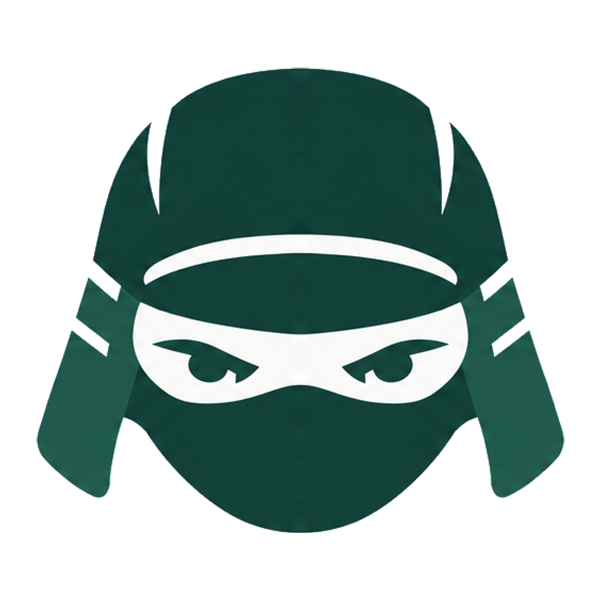
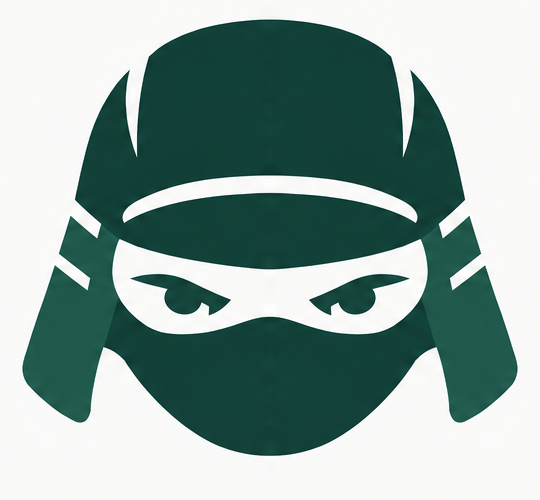
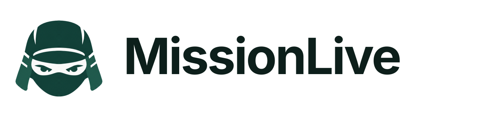
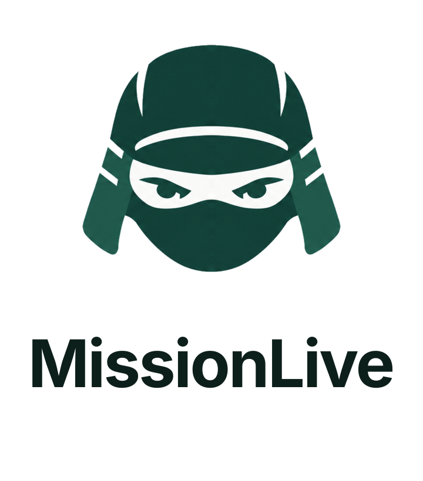
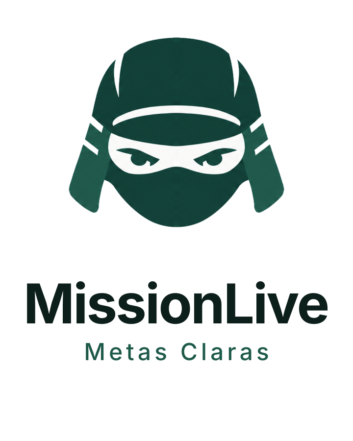
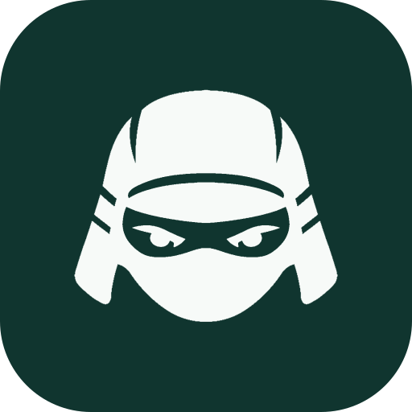
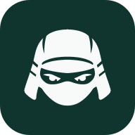
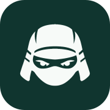

Claro · primary

Assets derivados diretamente da faithful aprovada do Conceito B. O símbolo não foi redesenhado nesta etapa.

Claro · primary

Escuro · branco

Horizontal · fundo claro

Horizontal · fundo escuro
Vertical

Institucional

App icon

512
192
180Favicon